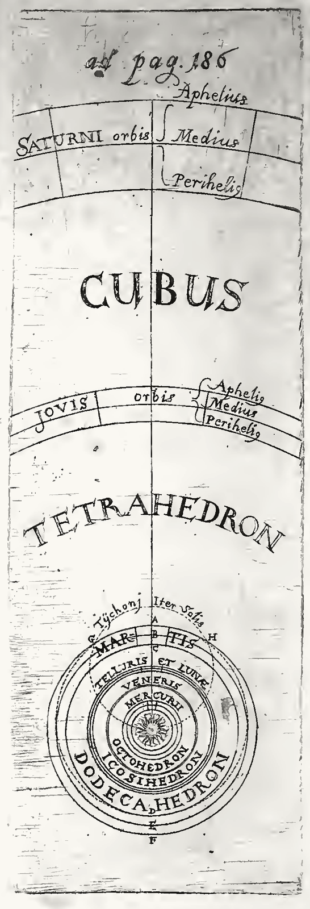

Chapter III, Prop. VIII: The Harmonic Third Law¶
In the Fifth Book of Harmonices Mundi (completed May 27, 1618; printed 1619), Kepler returns after twenty-two years to the five regular solids of Mysterium Cosmographicum (1596), armed now with Tycho Brahe's exact observations and his own discovery in Astronomia Nova (1609) that each planetary orbit is a focal ellipse cORB with the Sun Solf at one focus, sweeping equal areas in equal times between Pper (perihelion) and Aaph (aphelion) along the major axis APaxis (semi-major axis $a$ around orbital center Corb).
In Chapter III, Proposition VIII—conceived on March 8, 1618, lost through an arithmetic slip, and recovered triumphantly on May 15, 1618—Kepler announces the universal law governing all orbital periods and distances (Lex Tertia):
“Yet the thing is most certain and altogether exact: **the proportion that holds between the periodic times of any two planets whatsoever is precisely the sesquialterate* ($3/2$ power) of the proportion of their mean distances, that is, of the spheres themselves—keeping in mind, however, that the arithmetic mean between the two diameters of the elliptical oval is slightly less than the longer diameter. And therefore, if from the period of Earth, for instance, which is one year, and from the period of Saturn, which is thirty years, you take the third part of the proportion—that is, the cube roots—and double that proportion by squaring the roots, you will obtain in the resulting numbers the most exact proportion of the mean distances of Earth and Saturn from the Sun.”*
Expressed in exact algebraic ratio:
$$\left(\frac{T_1}{T_2}\right)^2 = \left(\frac{a_1}{a_2}\right)^3, \qquad \text{or} \qquad T \propto a^{3/2}.$$
Thus if one planet were four times farther from the Sun than another ($a_1 : a_2 = 4 : 1$), its periodic time would be eightfold ($T_1 : T_2 = 8 : 1$, since $8^2 = 4^3 = 64$); if nine times farther ($9 : 1$), twenty-sevenfold ($27 : 1$, since $27^2 = 9^3 = 729$).

